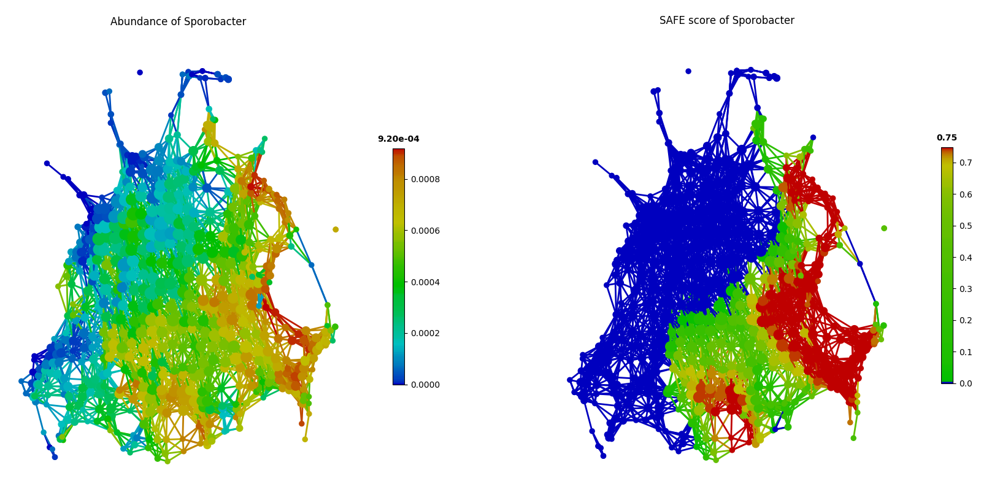
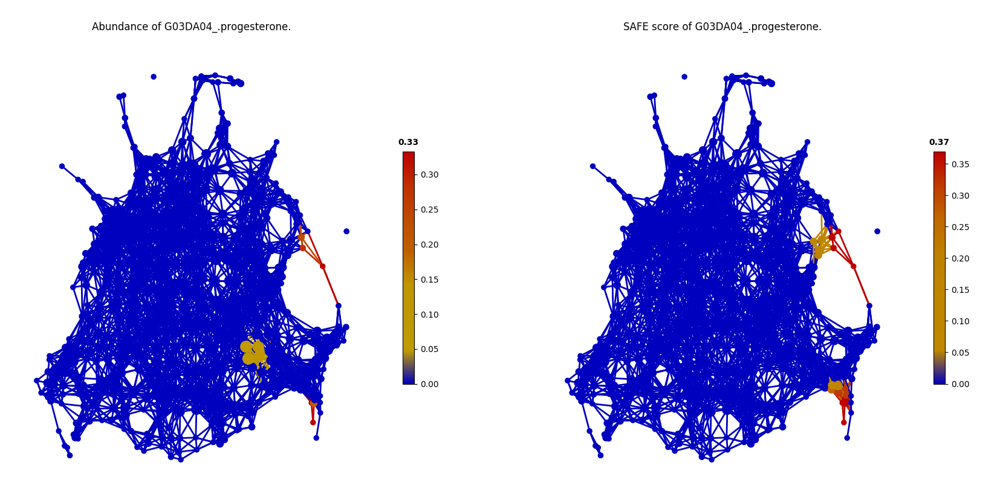
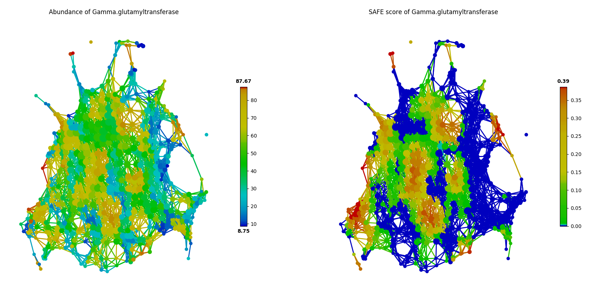
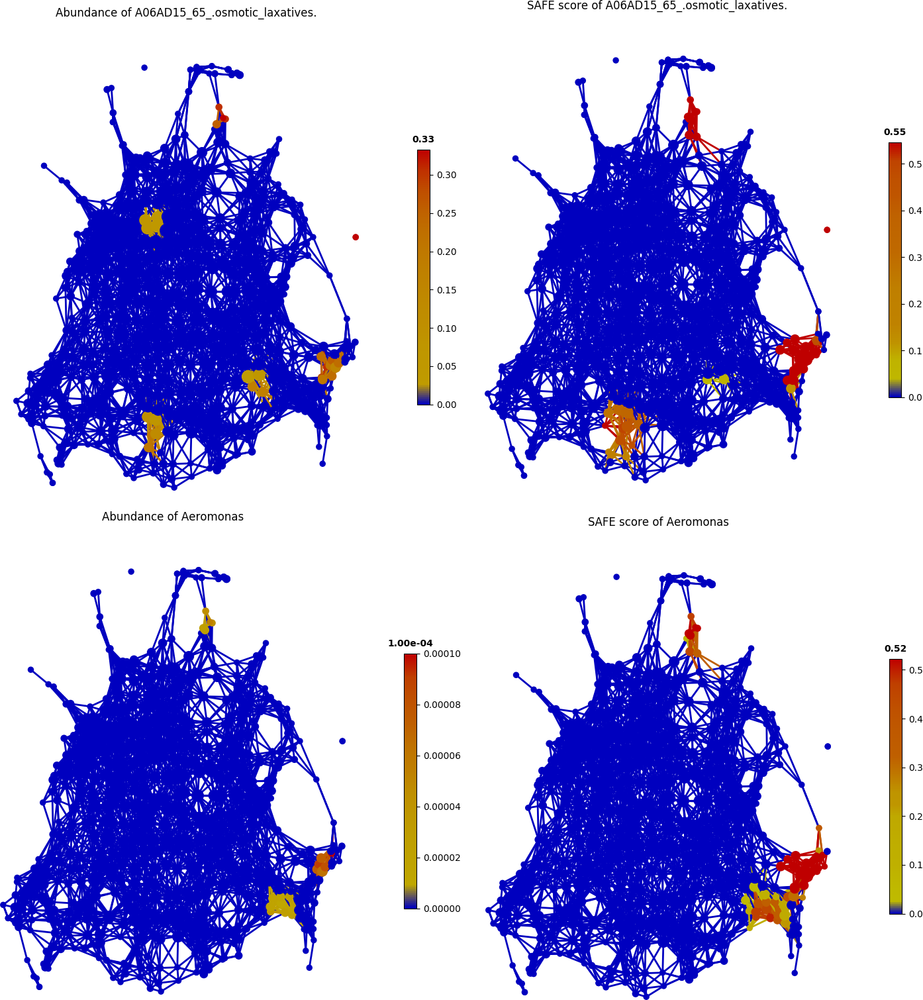

Microbiome Examples¶
The three published cohort data analysis pipelines was packaged into three ipython notebooks at github. You could access these by:
- Flemish Gut Flora Project(FGFP) notebook [Ref4]
- American Gut Project(AGP) notebook [Ref7]
- Earth Microbiome Project(EMP) notebook [Ref6]
- Simulation mixed type notebook
Analyzing the population-scale FGFP microbiome dataset¶
To demonstrate and validate the performance of tmap, we benchmarked the result from ‘Population-level analysis of gut microbiome variation’ (abbreviated as FGFP study below). [Ref4] tmap was applied to re-analyze the driver species of human gut microbiota, significant microbiome covariates from metadata and the interaction between driver genera and covariates.
from __future__ import print_function
from sklearn.preprocessing import MinMaxScaler
from sklearn.cluster import DBSCAN
from tmap.tda import mapper, filter
from tmap.tda.cover import Cover
from tmap.tda.plot import show, Color
from tmap.tda.metric import Metric
from tmap.tda.utils import optimize_dbscan_eps,cover_ratio
from tmap.netx.SAFE import SAFE_batch, get_SAFE_summary
from tmap.test import load_data
import os
# load taxa abundance data, sample metadata and precomputed distance matrix
X = load_data.FGFP_genus_profile()
metadata = load_data.FGFP_metadata()
dm = load_data.FGFP_BC_dist()
# TDA Step1. initiate a Mapper
tm = mapper.Mapper(verbose=1)
# TDA Step2. Projection
metric = Metric(metric="precomputed")
lens = [filter.MDS(components=[0, 1], metric=metric,random_state=100)]
projected_X = tm.filter(dm, lens=lens)
# Step4. Covering, clustering & mapping
eps = optimize_dbscan_eps(X, threshold=95)
clusterer = DBSCAN(eps=eps, min_samples=3)
cover = Cover(projected_data=MinMaxScaler().fit_transform(projected_X), resolution=50, overlap=0.75)
graph = tm.map(data=X, cover=cover, clusterer=clusterer)
print('Graph covers %.2f percentage of samples.' % cover_ratio(graph,X))
n_iter = 1000
safe_scores = SAFE_batch(graph, meta_data=X, n_iter=n_iter)
Driver species analysis¶
In FGFP study, driver genus was identified by the contribution of each genus to microbiome variation via Canonical correspondence analysis (CCA) using both raw and normalized genus abundance. In our re-analysis, we identified driver genus by ranking the importance of a genus by its SAFE enrichment score with tmap. This approach successfully recovered all the top-10 driver genera reported in the FGFP study.
Additionally, tmap also identified top-ranking driver genera that were not reported among the top-10 driver genera in the FGFP study, including unclassified_Veillonellaceae, unclassified_Clostridiaceae and Sporobacter. As in the following figure of tmap network visualization, these genera (such as Sporobacter) show enrichments in multiple dispersed parts of the network, rather than a single enriched component, which presents a ‘non-linear’ pattern that may be hard to detect in CCA.
Identification of significant host covariates¶
The FGFP study identified host covariates of microbiome variation by calculating the association between host factors and genus-level community ordination with the envfit function in the vegan R package. The envfit function preforms MANOVA and linear correlation for categorical and continuous variables, respectively. In total, 69 out of 503 host factors were identified as covariates of gut microbiome using FDR<0.1, and 43 among them were considered as significant covariates when using FDR<0.05 as a cut-off.
Since tmap was robust to identify both linear and non-linear associations, 67 out of 503 host factors were identified as significant covariates with FDR<0.05. Compared to the original FGFP study, tmap successfully identified 41 out of the 43 formerly detected covariates, and also identified 26 new covariates.
The two covariates reported as significant in the FGFP study but not identified by tmap are G03DA04_progesterone and Gamma-glutamyltransferase. As shown in the following figures, it can be found that, G03DA04_progesterone was observed only in a small group of samples, and is not significant (SAFE score < 0.67) after SAFE transformation due to the small sample size.
In contrast, Gamma-glutamyltransferase was observed in most of the samples as in the following figure. But the network landscape (SAFE scores) of this factor did not show significant patterns of enrichment (SAFE score < 0.67).
Microbiome-wide association of FGFP host covariates¶
In FGFP study, the boosted additive generalized linear model was performed to analyze association between host covariates and driver species, with a 5% significance level (after adjustment for multiple comparison). However, this approach reported small effect sizes for covariates to explain the variation of genus abundance (correlation coefficient from 0.015 to 0.147).
As an alternative, tmap uses the network-based SAFE scores for association analysis, rather than the original feature values. And association is performed based on aggregated values on nodes (groups of samples), instead of original feature values on samples. Pairwise Pearson correlation was calculated with a FDR<5% significance level. Compared with results of the FGFP study, this approach reported improved effect sizes of host covariates (correlation coefficient from 0.115 to 0.728). For example, the association between concentration of serum Hemoglobin and abundance of Roseburia, detected to be significantly associated by both approaches, the coefficient was improved from 0.12 to 0.72 by using tmap.
Additionally, new associations were also identified by tmap. For example, the association between usage of A06AD15_65_.osmotic_laxatives and abundance of Aeromonas was found, as demonstrated in the following figure.
Analyzing the human microbiome from a daily timescales study¶
tmap can be used in time-series study of human microbiome, such as the daily timescales study by David et al.. This study collected daily fecal and salivary samples from two individuals to analyze how lifestyle affects the dynamics of human microbiota. With tmap, we can visualize how timescales are mapped to the landscape of microbiome of a subject to discover hidden patterns in personal microbiome dynamics. [Ref5]
More details about the codes used in this analysis can be found at test/test_Daily_saliva.py and test/test_Daily_stool.py.
from __future__ import print_function
from sklearn.preprocessing import MinMaxScaler
from sklearn.cluster import DBSCAN
from tmap.tda import mapper, filter
from tmap.tda.cover import Cover
from tmap.tda.plot import show, Color
from tmap.tda.metric import Metric
from tmap.tda.utils import optimize_dbscan_eps,cover_ratio
from tmap.netx.SAFE import SAFE_batch, get_SAFE_summary,SAFE_single
from tmap.test import load_data
from matplotlib.pyplot import title
from scipy.spatial.distance import pdist,squareform
# load taxa abundance data, sample metadata and precomputed distance matrix
X = load_data.Daily_genus_profile("stool")
X = X.drop("Stool69",axis=0)
# Stool69 is missing at provided metadata. So deleted it
metadata = load_data.Daily_metadata_ready()
dm = squareform(pdist(X,metric="braycurtis"))
metadata = metadata.loc[X.index,:]
# TDA Step1. initiate a Mapper
tm = mapper.Mapper(verbose=1)
# TDA Step2. Projection
metric = Metric(metric="precomputed")
lens = [filter.MDS(components=[0, 1], metric=metric,random_state=100)]
projected_X = tm.filter(dm, lens=lens)
# Step4. Covering, clustering & mapping
eps = optimize_dbscan_eps(X, threshold=99)
clusterer = DBSCAN(eps=eps, min_samples=3)
cover = Cover(projected_data=MinMaxScaler().fit_transform(projected_X), resolution=50, overlap=0.85)
graph = tm.map(data=X, cover=cover, clusterer=clusterer)
print('Graph covers %.2f percentage of samples.' % cover_ratio(graph,X))
Filtering by MDS.
...calculate distance matrix using the precomputed metric.
Finish filtering of points cloud data.
Mapping on data (501, 98) using lens (501, 2)
...minimal number of points in hypercube to do clustering: 3
...create 474 nodes.
...calculate projection coordinates of nodes.
...construct a TDA graph.
...create 3313 edges.
Finish TDA mapping
Graph covers 91.22 percentage of samples.
First, we take the metadata of COLLECTION_DAY as our target variable to be mapped to the microbiome TDA network.
target_feature = 'COLLECTION_DAY'
color = Color(target=metadata.loc[:, target_feature], dtype="numerical", target_by="sample")
show(data=X, graph=graph, color=color, fig_size=(10, 10), node_size=15, mode='spring', strength=0.13)
The following figure shows how the fecal microbiome changes with the COLLECTION_DAY for the two studied subjects.
Next, we can map HOST_SUBJECT_ID to the TDA network to show inter-individual differences. In the following codes, the categorical type is used to show dominant subject ID for a node, which is a group of samples, and may contain different subjects. Or we can use a numerical type to show mean values of the target variable for each node.
target_feature = 'HOST_SUBJECT_ID'
color = Color(target=metadata.loc[:, target_feature], dtype="categorical", target_by="sample")
show(data=X, graph=graph, color=color, fig_size=(10, 10), node_size=15, mode='spring', strength=0.13)
color = Color(target=metadata.loc[:, target_feature], dtype="numerical", target_by="sample")
show(data=X, graph=graph, color=color, fig_size=(10, 10), node_size=15, mode='spring', strength=0.13)
The main focus of the original study is to associate changes in microbiome with changes in lifestyle. In the study, Subject A left the USA on day 70 and returned on day 122. He suffered from diarrheal illnesses from day 80 to day 85, and from day 104 to day 113. Subject B suffered from a enteric infection from days 151 to 159.
def time_range(sample,start,end):
target_vals = [1 if metadata.loc[_,"HOST_SUBJECT_ID"]=="2202:Donor%s" % sample and metadata.loc[_,"COLLECTION_DAY"] in list(range(start,end+1)) else 0 for _ in X.index]
color = Color(target=target_vals, dtype="numerical", target_by="sample")
show(data=X, graph=graph, color=color, fig_size=(10, 10), node_size=15, mode='spring', strength=0.03)
#title("Subject %s at day %s to %s" % (sample,start,end))
# Travel period
time_range("A",70,123)
# First diarrheal illness
time_range("A",80,85)
# Second diarrheal illness
time_range("A",104,113)
# Pre-travel period
time_range("A",40,69)
# Travel period
time_range("A",70,122)
# Post-travel period
time_range("A",123,153)
# Pre-enteric infection period
time_range("B",121,150)
# enteric infection period
time_range("B",151,159)
# Post-enteric infection period
time_range("B",160,197)
From the above figures, we could found that there are several changes in the microbiome of subject A between day 70 and day 122. It is worth noting that, the fecal microbiome samples of diarrheal illnesses at different time points are adjacent to each other in the network, and are overlap with shared nodes. Subject A’s travel-related microbiota shift concluded in the original paper can be confirmed in this tmap re-analysis of the microbiome dataset. From the above figure, subject B’s microbiome before and after the enteric infection is distinct, which is also consistent with the results of the original study.